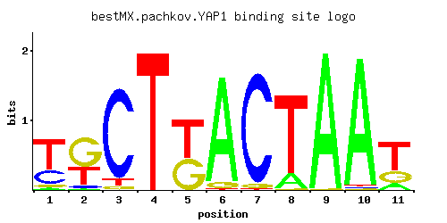

YAP1
YML007W, SNQ3, PAR1
Basic leucine zipper (bZIP) transcription factor required for oxidative stress tolerance; activated by H2O2 through the multistep formation of disulfide bonds and transit from the cytoplasm to the nucleus; mediates resistance to cadmium
Best-performing DNA-binding model.

View and copy the recommended matrices ↘
A | 0.032 0.009 0.001 0.001 0.001 0.934 0.003 0.152 0.996 0.982 0.131 C | 0.288 0.057 0.901 0.001 0.001 0.003 0.949 0.001 0.001 0.006 0.001 G | 0.053 0.591 0.037 0.001 0.455 0.055 0.039 0.007 0.004 0.004 0.262 T | 0.626 0.344 0.062 1.000 0.545 0.009 0.009 0.840 0.001 0.009 0.607
A | 3 0 0 0 0 93 0 15 99 98 13 C | 28 5 90 0 0 0 94 0 0 0 0 G | 5 59 3 0 45 5 3 0 0 0 26 T | 62 34 6 100 54 0 0 84 0 0 60
A | -2.30 -3.57 -5.77 -5.77 -5.77 1.07 -4.67 -0.74 1.14 1.12 -0.89 C | 0.47 -1.15 1.61 -5.19 -5.19 -4.09 1.66 -5.19 -5.19 -3.40 -5.19 G | -1.22 1.19 -1.58 -5.19 0.93 -1.19 -1.53 -3.25 -3.81 -3.81 0.38 T | 0.67 0.07 -1.64 1.14 0.53 -3.57 -3.57 0.97 -5.77 -3.57 0.64
Alternative candidate matrices 12
Historical matrix candidates from the original ScerTF database. Expand a source to inspect its original logo, scores, and matrix values.
YAP1_AFoat et. al.P = 1View matrix ↘
YAP1_BFoat et. al.P = 1.05e-14View matrix ↘
YAP1_CFoat et. al.P = 1View matrix ↘
YAP1_DFoat et. al.P = 1.44e-15View matrix ↘
YAP1_AFordyce et. al.P = 0.0004362View matrix ↘
YAP1_BFordyce et. al.P = 0.002881View matrix ↘
YAP1_CFordyce et. al.P = 0.0002793View matrix ↘
YAP1Harbison et. al.P = 4.94e-16View matrix ↘
YAP1Macisaac et. alP = 4.68e-15View matrix ↘
YAP1Morozov et. al.P = 6.66e-15View matrix ↘
YAP1Zhu et. al.P = 3.79e-05View matrix ↘
YAP1Zhao and StormoP = 1.13e-05View matrix ↘
Gene-level annotations and interactions.
Genes bound in ChIP-chip experiments 156 genes
YAL003W, YAL005C, YAL037W, YBL018C, YBL032W, YBL033C, YBL087C, YBR068C, YBR190W, YBR191W, YBR200W, YCR028C, YDL013W, YDL017W, YDL018C, YDL020C, YDL133W, YDL170W, YDL171C, YDL179W, YDL182W, YDL183C, YDR010C, YDR011W, YDR013W, YDR059C, YDR060W, YDR132C, YDR164C, YDR165W, YDR224C, YDR225W, YDR259C, YDR261C, YDR307W, YDR308C, YDR316W-A, YDR316W-B, YDR500C, YDR501W, YDR533C, YEL042W, YEL044W, YEL045C, YEL046C, YER012W, YER044C, YER078C, YER079W, YER138C, YFL034W, YFL056C, YFL057C, YFR017C, YFR023W, YGL114W, YGL134W, YGL135W, YGL136C, YGL202W, YGR009C, YGR010W, YGR011W, YGR027C, YGR060W, YGR162W, YGR191W, YGR192C, YGR194C, YGR195W, YGR234W, YHR048W, YHR179W, YJL048C, YJL060W, YJL095W, YJL098W, YJL100W, YJL101C, YJL148W, YJR104C, YJR105W, YJR109C, YJR110W, YJR122W, YJR123W, YKL071W, YKL150W, YKL151C, YKR052C, YKR054C, YKR055W, YKR058W, YKR071C, YKR076W, YLL024C, YLL058W, YLL059C, YLL060C, YLL063C, YLR074C, YLR075W, YLR105C, YLR108C, YLR109W, YLR302C, YLR367W, YLR369W, YLR439W, YLR460C, YML028W, YML115C, YML116W, YML130C, YML131W, YMR037C, YMR038C, YMR144W, YMR231W, YNL025C, YNL087W, YNL134C, YNL231C, YNL238W, YNR018W, YNR061C, YOL034W, YOL115W, YOL117W, YOL118C, YOL119C, YOL123W, YOL124C, YOL151W, YOR018W, YOR043W, YOR044W, YOR074C, YOR075W, YOR128C, YOR162C, YOR163W, YOR180C, YOR181W, YOR236W, YOR273C, YOR274W, YOR315W, YOR335C, YOR336W, YPL044C, YPL111W, YPL216W, YPL217C, YPR002C-A, YPR065W
Genes affected by TF deletion 56 genes
YOR225W, YDR135C, YOR226C, YPL016W, YMR105C, YNL111C, YML058W-A, YNL339C, YCR107W, YLR155C, YLR157C, YML028W, YGR296W, YMR173W, YMR023C, YNR066C, YLR099C, YJL026W, YOL150C, YLR160C, YPR065W, YGR294W, YJL101C, YKL096W, YLR108C, YNR076W, YKL120W, YLR109W, YMR173W-A, YGR019W, YDR353W, YHR219W, YDR481C, YJR162C, YOL119C, YOL151W, YDR297W, YER039C, YER067W, YER044C, YJR104C, YGL255W, YMR034C, YMR038C, YOL067C, YBR244W, YHR135C, YBR085W, YHR046C, YKL008C, YKL010C, YLR178C, YFL068W, YNL134C, YOR306C, YGR209C
Genes supported by both experiments 11 genes
YER044C, YJL101C, YJR104C, YLR108C, YLR109W, YML028W, YMR038C, YNL134C, YOL119C, YOL151W, YPR065W